创新空间假设报告
案例：trem2-atherosclerosis · 生成时间：2026-08-07T02:40:54.233544+00:00 · 本报告为研究资料，不构成法律意见。
研究范围
研究对象：TREM2-targeted therapeutics (agonist antibodies, small molecules; no single lead molecule specified)
靶点：TREM2
适应症：atherosclerosis
目标法域：CN, US
关联法域：WO, EP
截至：2026-08-06
深度：standard_analysis
主要申请人：Alector LLC / Alector, Inc., Amgen Inc., Denali Therapeutics Inc., Vigil Neuroscience, Inc., iTeos Therapeutics（详情见执行摘要）
1. 使用原则
本报告只提出可验证的创新空间假设。空白表示当前检索集合、字段或法域没有建立充分证据，不表示不存在专利，也不表示可直接实施。
2. 假设总表
| 候选方向 | 关联族/缺口 | 已有依据 | 当前技术缺口 | 反例 | 验证动作 | 信心 |
|---|---|---|---|---|---|---|
| 核心实体的结构、序列、变体、盐型/晶型或选择性/安全窗 | TA-FAM-001 | 核心组成/功能性 claim 记录提供边界 | 对哺乳动物施用有效量的激动性抗TREM2抗体以治疗脂质代谢紊乱或动脉粥样硬化相关疾病/病症;说明书提及TREM2表达于动脉粥样硬化病灶巨噬细胞 | 本案唯一在检索片段中明确以动脉粥样硬化为治疗方法权利要求对象的族;申请人字段为推断,未经官方确认;优先权号、公开日、族内其他法域成员均未核实,需人工登录WIPO Patentscope/USPTO核实claim原文与国家阶段成员。 | 补检同族/官方 claim；必要时做结构、制剂、药效或生物标志物实验 | 中/待验证 |
| 核心实体的结构、序列、变体、盐型/晶型或选择性/安全窗 | TA-FAM-002 | 核心组成/功能性 claim 记录提供边界 | 结合并激动人TREM2的抗体;通过TREM2/DAP12信号通路激动髓系细胞;用于治疗与TREM2功能丧失相关的疾病(阿尔茨海默病、多发性硬化) | 本族权利要求未见明确覆盖动脉粥样硬化适应症;仅其代表性抗体的同源分子AL002a被独立学术研究(ATVB 2024)用于动脉粥样硬化斑块稳定性实验,论文作者为Alector雇员,但该研究本身不是专利文本,不能作为claim覆盖证据;是本领域最早的Alector TREM2激动性抗体基础族,列为背景/组合物层context。 | 补检同族/官方 claim；必要时做结构、制剂、药效或生物标志物实验 | 中/待验证 |
| 核心实体的结构、序列、变体、盐型/晶型或选择性/安全窗 | TA-FAM-003 | 核心组成/功能性 claim 记录提供边界 | 特异性结合并激活人TREM2的抗原结合蛋白;在不依赖Fc介导交联的情况下激活TREM2/DAP12信号;用于治疗阿尔茨海默病、多发性硬化 | Amgen独立于Alector的激动性抗体族;权利要求聚焦神经退行性疾病,检索片段未见动脉粥样硬化相关权利要求;作为TREM2激动性抗体竞争布局的边界命中记录。 | 补检同族/官方 claim；必要时做结构、制剂、药效或生物标志物实验 | 中/待验证 |
| 核心实体的结构、序列、变体、盐型/晶型或选择性/安全窗 | TA-FAM-004 | 核心组成/功能性 claim 记录提供边界 | 特异性结合并激活人TREM2的抗原结合蛋白(基础激动性抗体平台,为ATV:TREM2/DNL919的前置技术) | 同标题后续申请(WO2023039612A1、US20240376199A1)在检索片段中被其他专利引用为背景/优先技术,但彼此优先权号是否相同未核实,不应直接当作同一DOCDB简单族合并计数;检索片段未见动脉粥样硬化相关权利要求。 | 补检同族/官方 claim；必要时做结构、制剂、药效或生物标志物实验 | 中/待验证 |
| 核心实体的结构、序列、变体、盐型/晶型或选择性/安全窗 | TA-FAM-005 | 核心组成/功能性 claim 记录提供边界 | 激动性抗TREM2抗体,Fc域工程化插入转铁蛋白受体结合序列,用于跨血脑屏障递送 | 血脑屏障递送工程化分支,与WO2018195506A1基础抗体族相关但技术特征不同(需分别解析);DNL919已于阿尔茨海默病I期临床因安全性信号(可逆性血液学毒性)终止开发;检索片段未见动脉粥样硬化相关权利要求或适应症提及。 | 补检同族/官方 claim；必要时做结构、制剂、药效或生物标志物实验 | 中/待验证 |
| 核心实体的结构、序列、变体、盐型/晶型或选择性/安全窗 | TA-FAM-006 | 核心组成/功能性 claim 记录提供边界 | 待核验 (检索片段仅显示hT2AB在pSYK检测中活性数据,未获取claim原文) | 本次检索未直接访问该专利原文,适应症范围及是否提及动脉粥样硬化均未核实,仅作为Amgen激动性抗体竞争布局的存在性记录。 | 补检同族/官方 claim；必要时做结构、制剂、药效或生物标志物实验 | 中/待验证 |
| 核心实体的结构、序列、变体、盐型/晶型或选择性/安全窗 | TA-FAM-007 | 核心组成/功能性 claim 记录提供边界 | 待核验 (检索片段未获取claim原文;VG-3927开发聚焦阿尔茨海默病) | 同主题WO申请约10件(二手统计,未逐一核实),本次仅确认WO2024097798、WO2025136936A1两个公开号,其余8件记为检索缺口;检索片段未确认动脉粥样硬化是否出现在说明书或权利要求中;VG-3927开发方Vigil于2025年5月被Sanofi以约4.7亿美元收购,原Amgen来源的iluzanebart项目权利将返还Amgen(不属本项目)。 | 补检同族/官方 claim；必要时做结构、制剂、药效或生物标志物实验 | 中/待验证 |
| 核心实体的结构、序列、变体、盐型/晶型或选择性/安全窗 | TA-FAM-008 | 核心组成/功能性 claim 记录提供边界 | 说明书背景部分提及TREM2激活程序与神经退行性疾病、动脉粥样硬化、肥胖、癌症等病理相关,但独立权利要求聚焦以抗TREM2抗体治疗癌症的方法,未见动脉粥样硬化作为权利要求限定的治疗适应症 | 机制与本案研究方向(TREM2激动)相反——为拮抗性抗体,抑制而非激动TREM2/efferocytosis;仅背景章节提及动脉粥样硬化,判定为"背景提及/未见披露"而非"可能覆盖";iTeos已收到Concentra Biosciences收购要约(2026年披露),管线状态需持续关注变化。 | 补检同族/官方 claim；必要时做结构、制剂、药效或生物标志物实验 | 中/待验证 |
| 联合治疗、给药顺序、周期、剂量和治疗线次 | TA-FAM-009 | 用途/联合/方案族存在保护布局 | 分离健康小鼠心脏TREM2hi巨噬细胞,经心包腔内注射用于治疗心脏功能障碍模型 | 排除原因:技术方案为过继性细胞治疗(非TREM2调节药物/抗体/小分子),适应症为心脏功能障碍(脓毒症/心梗/心衰)而非动脉粥样硬化本身;与本案研究对象(TREM2靶向药物+动脉粥样硬化)技术形态和适应症均不匹配,按质量门槛要求保留排除记录及理由,不计入核心/边界统计。 | 补检同族/官方 claim；必要时做结构、制剂、药效或生物标志物实验 | 中/待验证 |
| 耐药机制与下一代联合策略 | GAP-RESISTANCE | 当前样本未建立对象特异性耐药核心族 | 需要把 B2M、JAK/IFN、抗原呈递、TIL、髓系和替代检查点分层检索 | 不能把未搜到写成没有专利；文献机制不等于专利保护 | 专利+文献+临床注册三线补检，再做 claim chart | 低/需补检 |
| 安全窗、免疫相关不良反应监测和处置 | GAP-SAFETY | 当前技术方案包含监测和处置特征，但样本中直接 claim linkage 不足 | 监测指标、影像、分级阈值和激素处置可能形成方法/诊断方向 | 医疗指南或说明书内容不自动产生专利保护 | 逐项检索监测/阈值/处置组合并核对法域 claim | 中/需法律复核 |
统计可视化
打开 FTO 风格统计总览 · 图表由当前案例 CSV/JSON 自动生成。
专利族技术主题分布

统计口径：按 family_id 统计，每族归入一个主技术阶段。
权利要求类别分布

统计口径：按 claim-elements.csv 的 claim_category 记录数统计。
状态信号分布

统计口径：把官方状态和状态来源文字归入研究阶段信号（状态色板），不替代官方法律状态。
3. 分维度空白检查
| 维度 | 当前样本信号 | 空白判定 | 建议 |
|---|---|---|---|
| 核心结构/序列/化合物 | 见核心组成或抗体/序列方向 | 需查 Markush、序列变体和子族 | 结构检索+独立 claim 对比 |
| 盐型/晶型/制剂/工艺 | 若有制剂族则存在分层布局 | 配方和状态需单独核验 | 做组成、工艺、稳定性和制剂 claim chart |
| 给药/剂量/联合 | 用途、组合和 regimen 族较易出现 | 时间、剂量、患者人群可能有边界 | 按治疗线次、周期、顺序和联合对象补检 |
| 患者分层/诊断 | 标志物或邻近 ICB 族提供入口 | 对象特异性 linkage 可能不足 | 检索 biomarker + molecule + indication + claim |
| 耐药突变/机制 | 需要单独补检，不能用相邻标志物代替 | 当前证据不足 | 建立机制词表、文献证据和专利族三联表 |
4. 不得越过的结论
- “没有检索到”只能说明当前检索范围没有建立证据。
- 空白机会必须经结构、药效/制剂/诊断实验和法律复核后才能进入研发决策。
- 任何方向都要重新检查未公开申请、国家阶段、分案/继续申请、Markush 和官方法律状态。